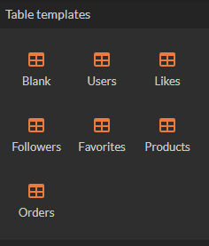
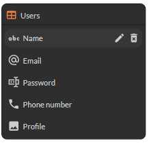
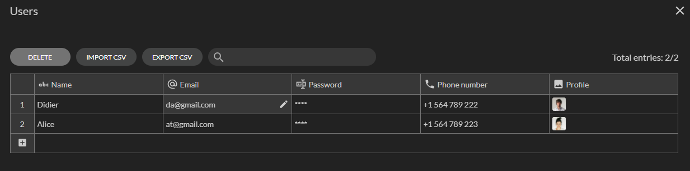
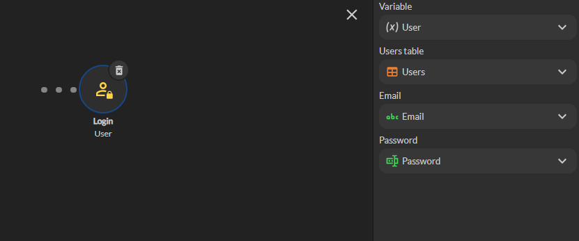
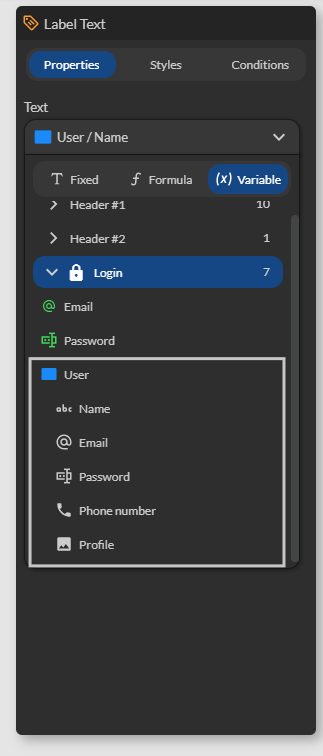
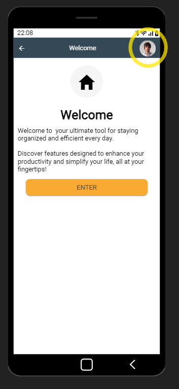

Authentification
L'authentification permet de sécuriser l'accès et de personnaliser l'expérience utilisateur.
Authentification
- L'authentification permet de protéger les données de l'utilisateur contre les accès non autorisés. En vérifiant l'identité de l'utilisateur avant de lui donner accès à son compte ou à des données sensibles, l'application s'assure que seules les personnes autorisées peuvent voir ou modifier ces informations.
- Grâce à l'authentification, une application peut fournir une expérience personnalisée en mémorisant les préférences, les historiques d'achat, les paramètres de compte, etc. Cela permet d'offrir un service plus adapté et agréable à l'utilisateur.
- L'authentification permet de gérer les niveaux d'accès au sein de l'application. En identifiant l'utilisateur, l'application peut déterminer quelles fonctionnalités ou quelles données lui sont accessibles, en fonction de son rôle ou de ses permissions.
Définition d’une table Utilisateurs
Les utilisateurs sont définis dans une table de votre choix, elle doit respecter les prérequis suivants:
- Contenir colonne appelée Name.
- Contenir une colonne appelée Profile.
- Contenir une colonne de type Email appelée Email.
- Contenir une colonne de type Password appelée Password.
D’autres colonnes caractérisant les utilisateurs, non utiles à l’authentification, peuvent être définies par exemple: sa date de naissance, sa ville ou bien son rôle.
La section Table Templates permet de définir une table utilisateur prête à l’emploi. Il suffit de cliquer/déplacer le modèle Users dans l’espace de travail.

La table Users suivante est crée:

Cette table est un point de départ et peut être modifiée en fonction des besoins tant que les prérequis ci-dessus sont respectés.
La table des utilisateurs peut être définie dans une source de données externe comme Google Sheets, TimeTonic ou Airtable.
Gestion des utilisateurs
La gestion des utilisateurs consiste à éditer les donnée de la table utilisateurs soit:
- Depuis Zyllio, onglet Database, via le bouton Edit sur la table.
- Depuis Airtable, TimeTonic ou Google Sheet si la table est externe.

Les utilisateurs peuvent être modifiés depuis cet boîte de dialogue y compris l’ajout et suppression d’utilisateurs.
Aussi une table d’utilisateurs peut être importée via un fichier CSV.
Authentifier un utilisateur
Ecran d’authentification
L’authentification se déclenche à partir d’un écran dans lequel un formulaire est défini avec au moins 2 champs de saisie:
- Email.
- Mot de passe.
Cet écran peut être défini à partir de zéro ou bien le modèle d’écran appelé Login.

Bouton d’authentification
Un bouton est nécessaire pour déclencher une authentification, ce bouton doit définir une action qui fait appel à l’action appelée Login disponible depuis l’éditeur d’action dans la section Authentication.

Cette action définit ces paramètres.
Redirection après authentification
Deux approches sont possibles pour rediriger l’utilisateur après l’authentification:
- La première consiste à définir une transition depuis le bouton qui a déclenché l’authentification. La transition s’effectuera uniquement si l’authentification réussit.
- La deuxième consiste à ajouter une action Go To Screen, cette dernière sera déclenchée uniquement si l’authentification réussit.
En règle générale, une action qui échoue interrompt la chaine d’actions: l’action suivante n’est donc pas exécutée.
Variable utilisateur authentifié
Une fois l’utilisateur authentifié avec succès, une variable User (nom par défaut) est mise à disposition pour un usage ultérieur. Par exemple:
- Afficher le nom ou l’email de l’utilisateur authentifié.
- Associer l’utilisateur avec un nouvel enregistrement. Par exemple: l’email de l’utilisateur dans une table Commande ou bien une table Favoris.
- Utiliser l’email dans l’envoi d’un email ou d’une Push Notifications.
- ...
Cette variable est accessible depuis la section variables, puis l’écran d’authentification, puis User.

Déconnecter un utilisateur
L’utilisateur peut se déconnecter puis le volet profil utilisateur accessible depuis l’entête des écrans.
